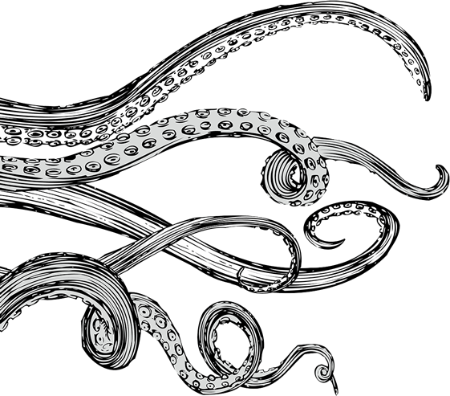

На вид Ктулху разными частями тела подобен осьминогу, дракону и человеку: судя по барельефу Энтони Уилкокса, героя «Зова Ктулху», и таинственному древнему изваянию из рассказа, чудовище имеет голову с щупальцами, гуманоидное тело, покрытое чешуёй, и пару рудиментарных крыльев. Описание из вымышленного журнала Густава Йохансена добавляет, что живой Ктулху хлюпает и истекает слизью при движении, а тело его зелено, студенисто и чудесным образом регенерирует с наблюдаемой быстротой. Точный рост его не указывается. Йохансен уподобил чудище «ходячей горе», большей, чем «легендарный Циклоп». Ктулху (плывущий или же идущий по дну) «воздымался над нечистой пеной, как корма демонического галеона».
Ктулху принадлежит роду Древних. Он лежит во сне, подобном смерти, на вершине подводного города Р’льех посреди Тихого океана. «При верном положении звёзд» Р’льех появляется над водой, и Ктулху освобождается. Ктулху способен воздействовать на разум человеческих существ, но его способности заглушаются толщей воды, так что подвластными ему остаются только сновидения особо чувствительных людей. В «Зове Ктулху» сны, напускаемые Ктулху, сильно ужасают видевших их, и порой доводят до сумасшествия. Ктулху — инопланетное, совершенно чуждое людской природе существо, а вся история человечества есть лишь миг его сна. Культисты убеждены в великой мощи своего идола, и гибель цивилизации представляется им весьма вероятным, хотя и незначительным, последствием пробуждения Ктулху.

Ктулху способен воздействовать на разум человеческих существ, но его способности заглушаются толщей воды, так что подвластными ему остаются только сновидения особо чувствительных людей. В «Зове Ктулху» сны, напускаемые Ктулху, сильно ужасают видевших их, и порой доводят до сумасшествия. Ктулху — инопланетное, совершенно чуждое людской природе существо, а вся история человечества есть лишь миг его сна. Культисты убеждены в великой мощи своего идола, и гибель цивилизации представляется им весьма вероятным, хотя и незначительным, последствием пробуждения Ктулху.